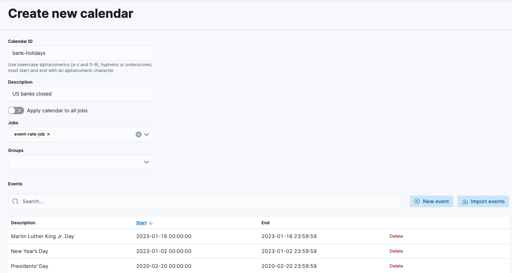
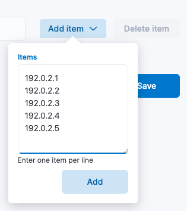
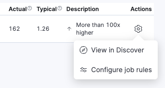

Tune your anomaly detection job
editRequired role
The Editor role or higher is required to create calendars, add job rules, and define custom URLs. To learn more, refer to Assign user roles and privileges.
After you run an anomaly detection job and view the results, you might find that you need to alter the job configuration or settings.
To further tune your job, you can:
- Create calendars that contain a list of scheduled events for which you do not want to generate anomalies, such as planned system outages or public holidays.
- Create job rules that instruct anomaly detectors to change their behavior based on domain-specific knowledge that you provide. Your job rules can use filter lists, which contain values that you can use to include or exclude events from the machine learning analysis.
- Define custom URLs to make dashboards and other resources readily available when viewing job results.
For more information about tuning your job, refer to the how-to guides in the machine learning documentation. Note that the machine learning documentation may contain details that are not valid when using a fully-managed Elastic project.
You can also create calendars and add URLs when configuring settings during job creation, but generally it’s easier to start with a simple job and add complexity later.
Create calendars
editSometimes there are periods when you expect unusual activity to take place, such as bank holidays, "Black Friday", or planned system outages. If you identify these events in advance, no anomalies are generated during that period. The machine learning model is not ill-affected, and you do not receive spurious results.
To create a calendar and add scheduled events:
- In your Elastic Observability Serverless project, go to Machine learning → Settings.
- Under Calendars, click Create.
- Enter an ID and description for the calendar.
- Select the jobs you want to apply the calendar to, or turn on Apply calendar to all jobs.
-
Under Events, click New event or click Import events to import events from an iCalendar (ICS) file:
A scheduled event must have a start time, end time, and calendar ID. In general, scheduled events are short in duration (typically lasting from a few hours to a day) and occur infrequently. If you have regularly occurring events, such as weekly maintenance periods, you do not need to create scheduled events for these circumstances; they are already handled by the machine learning analytics. If your ICS file contains recurring events, only the first occurrence is imported.
- When you’re done adding events, save your calendar.
You must identify scheduled events before your anomaly detection job analyzes the data for that time period. Machine learning results are not updated retroactively. Bucket results are generated during scheduled events, but they have an anomaly score of zero.
If you use long or frequent scheduled events, it might take longer for the machine learning analytics to learn to model your data, and some anomalous behavior might be missed.
Create job rules and filters
editBy default, anomaly detection is unsupervised, and the machine learning models have no awareness of the domain of your data. As a result, anomaly detection jobs might identify events that are statistically significant but are uninteresting when you know the larger context.
You can customize anomaly detection by creating custom job rules. Job rules instruct anomaly detectors to change their behavior based on domain-specific knowledge that you provide. When you create a rule, you can specify conditions, scope, and actions. When the conditions of a rule are satisfied, its actions are triggered.
Example use case for creating a job rule
If you have an anomaly detector that is analyzing CPU usage, you might decide you are only interested in anomalies where the CPU usage is greater than a certain threshold. You can define a rule with conditions and actions that instruct the detector to refrain from generating machine learning results when there are anomalous events related to low CPU usage. You might also decide to add a scope for the rule so that it applies only to certain machines. The scope is defined by using machine learning filters.
Filters contain a list of values that you can use to include or exclude events from the machine learning analysis. You can use the same filter in multiple anomaly detection jobs.
Example use case for creating a filter list
If you are analyzing web traffic, you might create a filter that contains a list of IP addresses. The list could contain IP addresses that you trust to upload data to your website or to send large amounts of data from behind your firewall. You can define the rule’s scope so that the action triggers only when a specific field in your data matches (or doesn’t match) a value in the filter. This gives you much greater control over which anomalous events affect the machine learning model and appear in the machine learning results.
To create a job rule, first create any filter lists you want to use in the rule, then configure the rule:
- In your Elastic Observability Serverless project, go to Machine learning → Settings.
-
(Optional) Create one or more filter lists:
- Under Filter lists, click Create.
- Enter the filter list ID. This is the ID you will select when you want to use the filter list in a job rule.
- Click Add item and enter one item per line.
-
Click Add then save the filter list:

- Open the job results in the Single Metric Viewer or Anomaly Explorer.
-
From the Actions menu in the Anomalies table, select Configure job rules.
 - Choose which actions to take when the job rule matches the anomaly: Skip result, Skip model update, or both.
- Under Conditions, add one or more conditions that must be met for the action to be triggered.
- Under Scope (if available), add one or more filter lists to limit where the job rule applies.
- Save the job rule. Note that changes to job rules take effect for new results only. To apply these changes to existing results, you must clone and rerun the job.
Define custom URLs
editYou can optionally attach one or more custom URLs to your anomaly detection jobs. Links for these URLs will appear in the Actions menu of the anomalies table when viewing job results in the Single Metric Viewer or Anomaly Explorer. Custom URLs can point to dashboards, the Discover app, or external websites. For example, you can define a custom URL that enables users to drill down to the source data from the results set.
To add a custom URL to the Actions menu:
- In your Elastic Observability Serverless project, go to Machine learning → Jobs.
- From the Actions menu in the job list, select Edit job.
- Select the Custom URLs tab, then click Add custom URL.
- Enter the label to use for the link text.
-
Choose the type of resource you want to link to:
If you select… Do this… Kibana dashboard
Select the dashboard you want to link to.
Discover
Select the data view to use.
Other
Specify the URL for the external website.
- Click Test to test your link.
- Click Add, then save your changes.
Now when you view job results in Single Metric Viewer or Anomaly Explorer, the Actions menu includes the custom link:
It is also possible to use string substitution in custom URLs. For example, you might have a Raw data URL defined as:
discover#/?_g=(time:(from:'$earliest$',mode:absolute,to:'$latest$'))&_a=(index:ff959d40-b880-11e8-a6d9-e546fe2bba5f,query:(language:kuery,query:'customer_full_name.keyword:"$customer_full_name.keyword$"')).
The value of the customer_full_name.keyword field is passed to the target page when the link is clicked.
For more information about using string substitution, refer to the machine learning documentation. Note that the machine learning documentation may contain details that are not valid when using a fully-managed Elastic project.